Что бы разобраться что же такое диструктуризация, обратимся сразу к примеру.
Допустим у нас есть функция которая принимает два числа, а возвращает нам массив значений с результатами математических вычислений с этими двумя числами
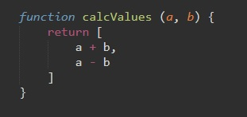Теперь допустим что мы хотим этот массив поместить в переменную:
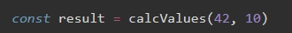Затем нам понадобилось в отдельные переменные записать результаты суммы и разности
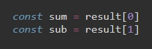D итоге у нас получилось аж целых три строчки кода. С помощью диструктуризации этот же код мы можем уместить в одной строчке:
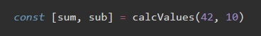Так что же такое диструктуризация. Своего рода это способ объявления переменных и помещения в них значений элементов массива или объекта
[sum, sub] - это объявление двух переменных, а значения мы получаем из функции которая возвращает нам массив. Важно отметить что заполнение переменных происходит поочереди
Теперь допустим что наша функция возвращает массив с большим количеством значений
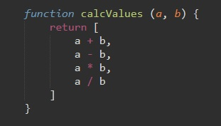И допустим что нам из этого массива нужно только результат сложения и умножения, тогда наша запись будет выглядеть вот так:
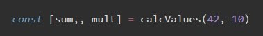Что за две запятых? Это значит что значение второго элемент массива мы никуда не записываем, для второго элемента мы не указываем переменную, оставляем пустое место, но запятую указываем.
Так же мы можем использовать оператор rest. Выглядеть это будет так:
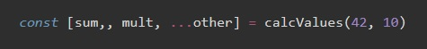т.е. мы первое значение записали в переменную sum, второе значение мы пропустили, третье записали в переменную mult, а все остальное записали в other. Если осталось одно значение (а в нашем случае так оно и есть), то other - это переменная, если несколько, то other - это уже массив
При работе с диструктуризацией, мы можем переменным задавать значения по умолчанию, это нужно в случае если елемент массива имеет значение indefine
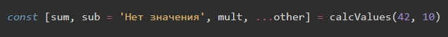c объектами все тоже самое, рассмотрим пример. Создадим объект
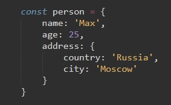К этому объекту мы так же можем применить диструктуризацию и в отличии от массива вместо квадратных скобок мы используем фигурные
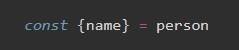Эта запись равносильна такой:
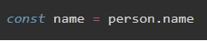Создание нескольких переменных
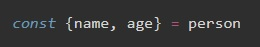Создание переменной со значением по умолчанию
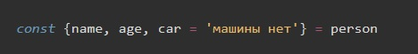Создание переменной где указывается значение какого ключа будет в нее записано
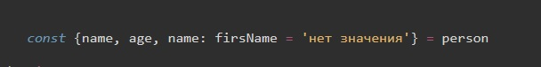firsName - это имя переменной, name - это значение ключа объекта, 'нет значения' - значение по умолчанию. Здесь обратим внимание на то, что при таком использовании пофигу на очередность. У нас в этом примере две переменные (name и firsName) которые получили одно и то же значение, хотя стоят в разнух концах перечисления
Использование rest
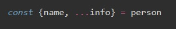